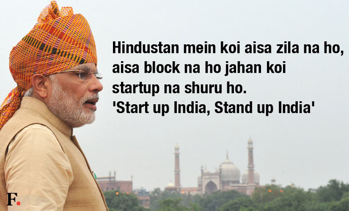
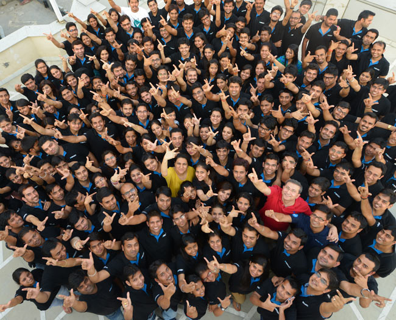

NOT Every NE is an Enemy...!
Published on | February 21, 2016

31-12-2015...the last day of 2015 was about to get over in a couple of hours from now. I checked my watch it was #10.30 pm....the whole country was driven by the New Year's Eve...
Read More...
Loud sounds; lights and the chilled weather outside equally contributed in making the atmosphere go crazy........yes it was the party time around...But for me story was different...I boarded train #12509 back home...after bidding thanks and bye to my cousin for fun time we had in taking ride over the #Bengaluru city...MG Road; UB city and Forum Mall; I looked for my seat and kept my luggage. All of sudden a guy checked in enquired about his seat; with few casual conversation I came to know him as #Martin and he was travelling to #Manipur; as the journey progressed we had couple of discussion; he too was an engineering student and was travelling back home in semester break; we discussed about our engineering life......
On #day2 of our journey; he had asked me a favour; to lend him some money (for food); he was running out of cash. He had promised me to return once we reach our destination...but damn me (following dad's principle) I said him 'NO' though I had the cash;after all he was stranger......but it cost me a great deal of consequences for I almost lost my wallet had he not came to my rescue...it had my ticket; cash; my college id and Atm card(damn how would I go home now).......I complain about my wallet loss and in no time he found it; accidently I left it in the washroom , he had equal chances take away the cash or not even return it but he was fair honest.....I felt Ashamed!!
....I should have helped him in his crisis....
At #10.30 PM #Malda Town without thinking I bought food for both of us...we shared the delicious Rosogullas together...I thanked him ; I even help him get a cab on reaching Guwahati....It was my best journey so far...quite memorable....I couldn't contact him since then but I want to thank him through this...thanks #Martin...you were like an #Angel. Guys people of North-east are not bad ; they are the most generous and kind hearted ones....its just the way how you treat them...Change our mindset people. Be Humane.....Stop Racism!!
StartUp India...StandUp India!
Published on | February 21, 2016
The new venture of 'Startup India Standup India' started by PM Modi will change the face of Indian business; it will drive more youths to come up with interesting and innovative ideas....
Read More...
Moreover, the decision of making startups tax free plus yearly funding will create a healthy environment for startups to flourish.Most recent statistics shows that IT firms like Infosys and WIPRO has special unit to help startups and encourage their growth...it will help India to become self-reliant and independent ...it's a great initiative further I urge my frnds to Wake Up if you have any business plan...this is your time!
Scheme launched like such not only shows PM's zeal to make India a strong economy but also give it a platform to compete with the rest of the world. If our country strives to grow at this pace then hopefully by end of 2030 it will become the second or third largest economy in the world, but the journey is far away,and it has to cross many challenges. Hope this new concept also brings great success like the Swach Bharat Abhiyaan and Make In India...